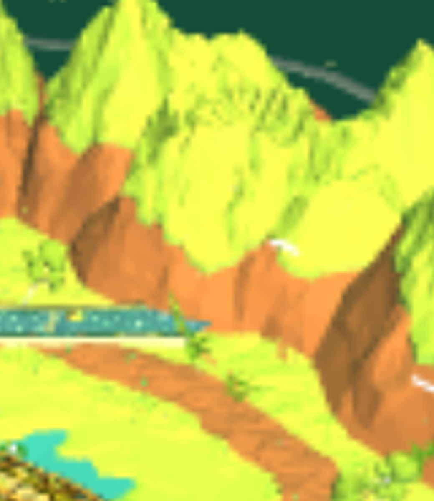
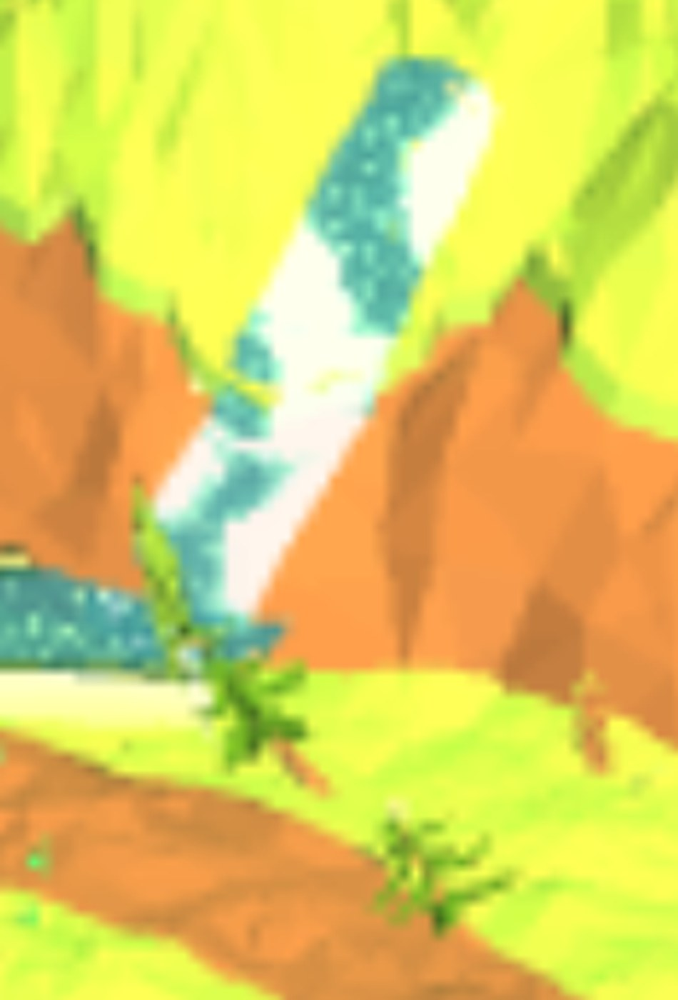
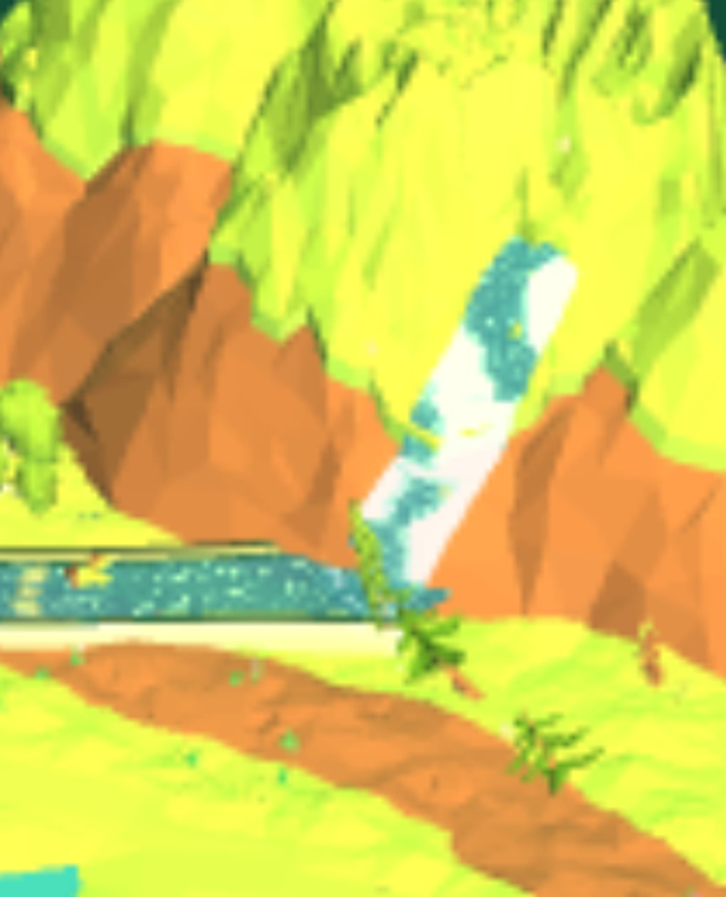
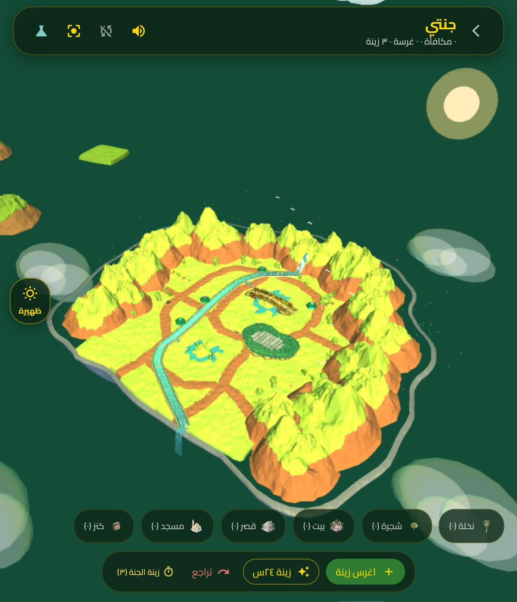

الخيار (E) الذي اعتُمد: نهر سماوي واحد يبدأ عند قدم الشلال M15 غرب البحيرتين، يعبر المرج، ثم ينحدر من حافة الجزيرة الجنوبية شلالًا. سبب رفض البدائل: قنوات منفصلة لكل بحيرة تُنتج ماءً «معلّقًا» بلا مصدر، ونهرًا يمرّ فوق الهضبة كان سيقطع الرصف ومواضع الزرع. المسار الحالي يمرّ في الفراغ بينهما بخلوص محسوب: ٥٫٨٨ و٩٫٤٨ وحدة من حدّ ماء البحيرتين.
lib/three/celestial_river_route.dart| البند | القيمة | كيف قيست |
|---|---|---|
| الطول | ١٥٠٫٩٤ وحدة | تراكم أقواس العيّنات |
| العيّنات | ٤٣٣ عيّنة بتباعد ٠٫٣٥ | دقة كافية لانحناء لا يُرى فيه تقطيع |
| البداية | (−1.55، −36.10) | قدم شلال M15 نفسه، لا في المرج |
| المماس عند البداية | (−0.7234، 0.6904) | مطابق لاتجاه انحدار الصخر |
| أقصى انعطاف | ٢٫٧° عند s ≈ ٩٦٫٨ | تغيّر المماس بين عيّنتين متتاليتين |
| عرض الماء | ٤٫٧ عند القدم ← ٣٫٢ بعد ٦ وحدات | فم الشلال أعرض، ثم يستقر |
الانحناء مقصود: نهر بقطع مستقيمة يبدو أنبوبًا، والـ٢٫٧° القصوى أقل من عتبة الإحساس بالكسر البصري، فلا تظهر «زاوية» في الماء.
| الطبقة | المنسوب | الملاحظة |
|---|---|---|
| سطح الماء | 0.26 | فوق مستوى ماء الطبيعة (−0.75) عن قصد |
| حافة مبلَّلة | 0.22 بعرض 0.35 | تُخفي التقاء الماء بالجدار |
| الجدار — حلقة ١ | 1.95 / 0.22 | ارتفاع ١٫٩٥ من القاعدة |
| الجدار — حلقة ٢ | 2.45 / 0.40 | الحافة العلوية |
| الجدار — حلقة ٣ | 2.62 / −0.85 | يغرق في الأرض عند الطرفين |
قدم الجدار −0.85 هو ما يمنع «شريطًا معلّقًا» عند نهاية النهر: الجدار
يُغرق نفسه تحت مستوى الأرض بدل أن يُقطع عند السطح. والحلقات الثلاث ضرورة لا ترف:
حلقة واحدة تُنتج مستوى مسطّحًا يُقرأ لوحًا، والثالثة هي التي تُدخل الجدار في التضاريس.
الشلال ليس منحدرًا افتراضيًا: ١٨ صفًا × ٥ أعمدة مقيسة بأشعة عمودية
على مجسّمات الجبال الجنوبية بعد تطبيق تصغير _kNatureScale = 0.80، ثم
أُضيف ٠٫٢٢ خلوصًا فوق السطح. الارتفاع الأول ٩٫٤٢
عند z = −44.5، والقدم ٠٫٢٤ عند z = −36.0 — هبوط ٩٫١٦ على ٨٫٥
أفقية (≈٤٧°). جدول منحنيات يُعاد قياسه بنفس السكربت، لا يُقدَّر بالعين: أي رقم
مختلف يُدفن الشلال في الصخر أو يجعله يطير فوقه.
أربع نقاط تنزل من ٠٫٢٦ إلى −١٢ وتتّسع كلما هبطت، فيبدو الماء منسكبًا من الجزيرة إلى الفراغ لا ملتصقًا بحافة.
كل مصبّ ينزل من حافة الجدار إلى البحيرة على ثلاث قطع، لأن القناة بمرحلة واحدة تُنتج سقوطًا عموديًا يبدو أنبوبًا مقطوعًا:
| المرحلة | من | إلى |
|---|---|---|
| ١ — من حافة الجدار | 0.26 | 0.81 |
| ٢ — الظهر | 0.81 | −0.55 |
| ٣ — الغطس في البحيرة | −0.55 | −0.75 |
العرض ١٫٢٤، ومقطع V بعمق ٠٫٢٠، وجداران حجريان
على الجانبين. والجدار الرئيسي يفتح فتحة عند كل مصبّ
(_gapFactor)، وإلا فسد الماء نفسه وسال من فوق الحجر.
| النموذج | الموضع الجديد (x, z) | السبب |
|---|---|---|
birch_a | (−14.03، −29.92) | كان في مجرى النهر |
birch_b | (1.51، −32.77) بإزاحة ٤٫٠ | أبعد من بقية الإزاحات لازدحام المجسّمات في تلك البقعة |
grass_b | (−16.34، −27.92) | كان في مجرى النهر |
لم يُحذف أي نموذج. ومضافة إلى ذلك حجران (Dodecahedron) عند
(−23.6، 15) و(−20، 36) يكسران استقامة الجدار في مقطعين طويلين بلا معلم.
بعد تركيب النهر كاملًا ظهر كل شيء — الماء، الجدار، المصبّان، شلال الحافة — إلا شلال M15: النهر ينتهي بقصّة حادة بلا ماء ينزل. التشخيص الأولي كان الحجب، فأُجري اختبار على كل الـ٢٤٥ مجسّمًا في الجدول بأشعة من سطح الشلال نحو كاميرا الافتتاح:
# أشعة من سطح الشلال نحو كاميرا الافتتاح، ٤٣٥٢ عيّنة على الجبال الست fall samples: 4352 blocked by rock: 76 (2%) vertex clearance to rock (min/median/max): [0.029 0.155 0.47] # ثم على كل الـ٢٤٥ مجسّمًا في الجدول fall sheet grid samples: 50, blocked: 2 (4%) blocker (3, 'mountain_b', -6.1, -49.0) -> 2 samples
أي أن الشلال يبعد عن الصخر ٠٫١٥ وحدة في المتوسط — لا حجب يُذكر. ثم أُعيد رسم حدود الشبكة على اللقطة بدقة (معايرة الإسقاط تنطبق على الشلال والجسر والحافة والهضبة)، فظهر أن موضع الشلال يغطي منحدرًا أخضر بلا أي أثر لماء.

ولأنه لا يمكن الحكم على لون ماء شفاف في مشهد مضيء، أُعيد البناء بمادة اختبارية
حمراء قاتمة وdepthTest: false. شلال الحافة ظهر أحمر
فعلًا، أما شلال M15 فلم يظهر ولو بكسل أحمر واحد — بينما البركة الأرجوانية تحته
ظهرت. إذًا الشبكة تدخل المشهد (البركة والوالد نفسه) لكنها لا ترسم.
الحكم جاء من داخل التطبيق، لا من التخمين:
FALLDEBUG verts=90 tris=0 posNan=0 nrmNan=270
bs=(-1.70, 4.83, -40.25) r=6.41 visible=true
tris=0 — فهرس المثلثات فارغ، والنواظم كلها NaN تبعًا
لذلك. السبب سطر واحد في _buildMainFall: كان يضيف صفًّا لكل
نقطة (٣ قيم) بينما _mesh يتوقع كل صف أن يحمل الأعمدة
الخمسة (١٥ قيمة). فيرى الدالة عمودًا واحدًا، فلا تُبنى أي رباعية:
// خطأ: صف لكل نقطة → columns = 1 → لا مثلثات
for (var c = 0; c < columns.length; c++) {
rows.add(<double>[columns[c], y, z]);
}
// صحيح: صفٌّ واحد لكل z يحمل الأعمدة الخمسة
final row = <double>[];
for (var c = 0; c < columns.length; c++) { row..add(columns[c])..add(y)..add(z); }
rows.add(row);
بعد الإصلاح ظهر الشلال، لكن صفّه الأعلى كان يظهر قصّة مستديرة معلّقة
فوق السطح. القياس أعطى الحل: الصخر يرتفع شمالًا من ٨٫٧٥ عند z = −44.5 إلى
١٣٫٠٣ عند z = −47.0؛ فالتمديد شمالًا كان سيضع القمة خلف الشلال
لا أمامه فلا يحجب شيئًا. الحل الصحيح: طمر الصف العلوي بمقدار
_kFallCrestTuck = 0.50 — أي ٠٫٢٨ وحدة داخل الصخر — فيخرج
الماء من شقّ طبيعي. الجدول المقيس نفسه لم يُعدَّل.


test/celestial_river_test.dart٢٥ حارسًا الآن، أهمها ثلاثة وُلدت من هذا العطل:
DodecahedronGeometry غير مفهرسة
بطبيعتها)، ولا ناظم NaN واحد.
'LEFT': MOUSE.PAN، وإيماءة الإصبعين تقريبًا دوران. يُسجَّل ملاحظةً
ولا يُصلح في هذه الجلسة.flutter build web --release يُقدَّم محليًا. لا صور مركّبة. تحقّق الكاش
عبر performance.getEntriesByType('resource'):
decodedBodySize = 3٬958٬564 بايت — أي أن الصفحة كانت فعلًا على البناء
الجديد لا على نسخة قديمة من الكاش.